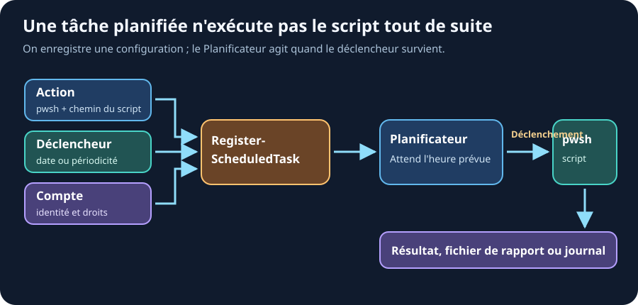

27. Planification des tâches
Ressources du chapitre - Exercices pratiques - Mémo des commandes
Pourquoi planifier ?
Un script qui doit tourner tous les jours ne doit pas être lancé manuellement. PowerShell permet de créer des tâches planifiées directement depuis la console.
Créer une tâche planifiée
La création se fait en 3 étapes : l'action, le déclencheur, et l'enregistrement.

Enregistrer la tâche ne lance pas encore le script : le Planificateur attend le
déclencheur, puis démarre pwsh.exe avec le compte prévu et conserve un
résultat à contrôler.
# 1. Définir l'action (quel script lancer)
$action = New-ScheduledTaskAction `
-Execute "C:\Program Files\PowerShell\7\pwsh.exe" `
-Argument "-NoProfile -NonInteractive -ExecutionPolicy Bypass -File C:\Scripts\Invoke-ArchivesCipherPol.ps1"
# 2. Définir le déclencheur (quand le lancer)
$trigger = New-ScheduledTaskTrigger -Daily -At "06:00"
# 3. Enregistrer la tâche
Register-ScheduledTask `
-TaskName "Archivage-Cipher-Pol" `
-Action $action `
-Trigger $trigger `
-Description "Rapport quotidien Cipher Pol"
Types de déclencheurs
# Tous les jours à 6h
$trigger = New-ScheduledTaskTrigger -Daily -At "06:00"
# Toutes les semaines, le lundi
$trigger = New-ScheduledTaskTrigger -Weekly -DaysOfWeek Monday -At "08:00"
# Au démarrage de Windows
$trigger = New-ScheduledTaskTrigger -AtStartup
# À la connexion d'un utilisateur
$trigger = New-ScheduledTaskTrigger -AtLogOn
# Toutes les heures (répétition)
$trigger = New-ScheduledTaskTrigger -Once -At "00:00" `
-RepetitionInterval (New-TimeSpan -Hours 1)
Gérer les tâches existantes
# Lister toutes les tâches
Get-ScheduledTask
# Voir une tâche spécifique
Get-ScheduledTask -TaskName "Archivage-Cipher-Pol"
# Lancer manuellement
Start-ScheduledTask -TaskName "Archivage-Cipher-Pol"
# Désactiver (sans supprimer)
Disable-ScheduledTask -TaskName "Archivage-Cipher-Pol"
# Réactiver
Enable-ScheduledTask -TaskName "Archivage-Cipher-Pol"
# Supprimer
Unregister-ScheduledTask -TaskName "Archivage-Cipher-Pol" -Confirm:$false
Voir le résultat d'une tâche
# Voir le dernier résultat (0 = succès)
$tache = Get-ScheduledTask "Archivage-Cipher-Pol" | Get-ScheduledTaskInfo
$tache.LastRunTime
$tache.LastTaskResult # 0 = OK, autre = erreur
Paramètres de sécurité
Pour qu'une tâche s'exécute même si personne n'est connecté, ce
n'est pas un réglage de -Settings mais un
principal qu'il faut définir :
# Le principal répond à : QUI exécute la tâche, et avec quels privilèges ?
$principal = New-ScheduledTaskPrincipal `
-UserId "DOMAINE\svc-archivage" `
-LogonType Password `
-RunLevel Highest # exécuter avec les privilèges administrateur
Register-ScheduledTask `
-TaskName "Archivage-Cipher-Pol" `
-Action $action `
-Trigger $trigger `
-Principal $principal
PasswordouS4U? --LogonType Password: le compte a accès au réseau et aux partages, mais il faut fournir le mot de passe à l'enregistrement. --LogonType S4U: pas de mot de passe à stocker, mais la tâche n'a pas accès aux ressources réseau. Parfait pour un script purement local.
Les -Settings servent à autre chose : le comportement de la tâche
une fois lancée.
$settings = New-ScheduledTaskSettingsSet `
-RunOnlyIfNetworkAvailable ` # ne démarrer que si le réseau est là
-ExecutionTimeLimit (New-TimeSpan -Hours 1) ` # tuer la tâche au bout d'une heure
-StartWhenAvailable # rattraper une exécution manquée
Ne confondez pas les deux
-RunOnlyIfNetworkAvailableconcerne la disponibilité du réseau, pas la session utilisateur. Ce n'est pas lui qui permet à une tâche de tourner hors session.
Bonne pratique : tester le script d'abord
Avant de planifier, assurez-vous que le script fonctionne en autonomie :
# Tester en mode non-interactif (comme la tâche planifiée le fera)
pwsh.exe -NonInteractive -File "C:\Scripts\MonScript.ps1"
# Vérifier qu'il n'y a pas de prompt (Read-Host, confirmations...)
À retenir
- ✅
New-ScheduledTaskAction: quel script lancer - ✅
New-ScheduledTaskTrigger: quand le lancer - ✅
Register-ScheduledTask: enregistrer la tâche - ✅
Start-ScheduledTask: lancer manuellement pour tester - ✅
Get-ScheduledTaskInfo: voir le dernier résultat
Lien - ScheduledTasks